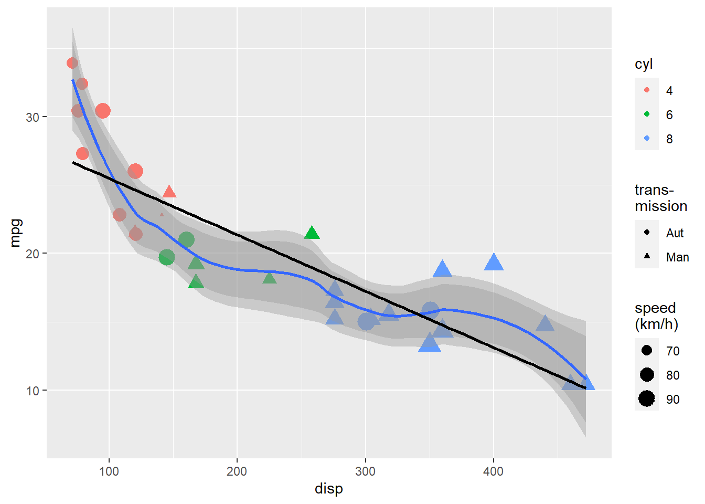

`geom_smooth()` using method = 'loess' and formula = 'y ~ x'
`geom_smooth()` using method = 'loess' and formula = 'y ~ x'
`geom_smooth()` using formula = 'y ~ x'

## create tibble from scratchdf_mean <-tibble(cyl =c("avg. car 4 cyl.", "avg. car 6 cyl.", "avg. car 8 cyl."), mpg =c(22.66, 17.74, 15.10), disp =c(105.14, 183.31, 353.10) )
# update a ggplot object# add text labels by geom_textp1 <- p_common +geom_text(data = df_mean, mapping =aes(x = disp, y = mpg, label = cyl),colour ="black", vjust =1.5, hjust =0.2 )# add text labels by geom_labelp2 <- p_common +geom_label(data = df_mean, mapping =aes(x = disp, y = mpg, label = cyl), colour ="black", vjust =1.5, hjust =0.2, alpha =0.25 ) +theme(legend.position ="bottom") +labs(colour ="cyl")
# ggpubr makes it easy to place # two objects side by sideggarrange( p1, p2, ncol =2, nrow =1, labels =c("geom_text()","geom_label()" ) )
`geom_smooth()` using formula = 'y ~ x'
`geom_smooth()` using formula = 'y ~ x'
`geom_smooth()` using formula = 'y ~ x'
`geom_smooth()` using formula = 'y ~ x'
#unemp99to02 <- ApiData(#"http://data.ssb.no/api/v0/en/table/10540",# Have not been able to specify more complex regions# Region = list("11*"),# Tid = c(paste(# rep(1999:2002, each = 12), # "M",# sprintf("%02d", 1:12), # sep = "")# )# )
# metadata_10540_no$Tid
paste(rep(1999:2002, each =12),"M",sprintf("%02d", 1:12),sep ="")